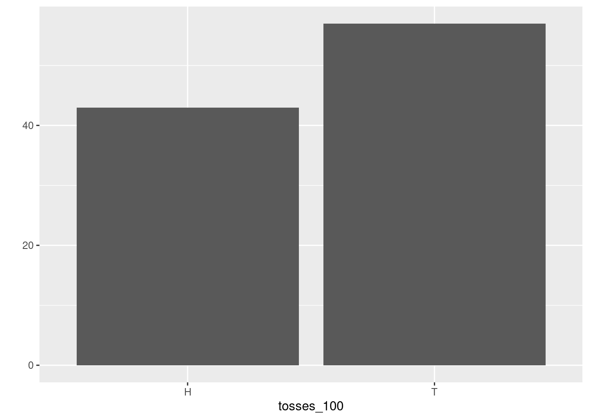

Chapter 2 Probability: Basic Definitions and Rules
Now that we have taken the first steps in probability ideas and in R, which have already taken us surprisingly far, let us now start with making the terminology a bit more precise. We will deepen the ideas we have learned so far. In particular we will discuss the notion of empirical probability in some more detail. We will also learn about a very important new idea which was often used implicitly in early studies of probability, namely the idea of independence.
In this lecture we will also encounter the first proper applications to Finance and financial data, which will also help us to learn about R’s syntax to read, manipulate and store data. This we will need as a foundation for more complex applications later in the course.
2.1 Terminology
Probability is a mathematical theory. This theory gets practical value and intuitive meaning in connection with real or conceptual experiments such as sampling individuals at random from a population or observing the movements of stock prices or the frequency of loan defaults. In the last lecture we already introduced some basic notions in the context of gambling and early probability theory.
Let us wrap up the definitions we have already discussed:
- Random Experiment
- When we use the term (random) experiment we mean a process leading to an uncertain outcome.
To make this notion precise and useful we need to agree what we mean by uncertain outcomes. Note again that we pin down the possible outcomes by agreeing on the outset what we want to consider as the possible outcomes. Take the simple example of considering whether the price of a stock is going to rise or fall at the next day. In a practical situations the outcome of a move in the stock price can be that it goes up or down but it could in principle also stay the same. Still when we think about the experiment of observing the stock price tomorrow in many applications in Finance we usually agree that up and down are the only possible outcomes of this experiment.
- Sample space
- The collection of all possible outcomes of an experiment is called the sample space.
- Basic outcome, event, simple event
- When we talk of a basic outcome we mean the possible outcome of a random experiment. An event is a subset of basic outcomes. Any event which consists of a single outcome in the sample space is called a simple event.
In the first lecture we learned about two approaches to measure probability. But the theory of probability actually does not depend on how we measure it precisely. In the theory of probability this measure is an abstract concept
Probability is a measure of how likely an event of an experiment is. Thus when we talk about probability in a precise and meaningful sense we can only do so in relation to a given sample space or to a certain conceptual experiment.
But before we go on let me clarify what we mean when we said that in the theory, probability is an abstract measure of uncertainty which we take as given.
2.2 Probability in theory and applications of probability
Probabilities are expressed as numbers between 0 and 1. As mentioned by Feller (p. 19) in his famous probability textbook, these numbers are of the same nature as distances in geometry. In the theory we assume they are given to us.
From the viewpoint of probability theory, we need not assume anything about how they are measured. In this sense probabilities in the theory of probability are an abstract measure of uncertainty.
In actual applications, however, the determination of probabilities or the application of the theory to observations requires often sophisticated statistical methods. So, while the mathematical as well as the intuitive meaning of probability are clear only as we proceed with the theory we will get a better ability to see how we can apply this concept.
2.3 Basic rules of probability
We already saw that the classical notion of probability directly lead to a few simple rules. In fact in the theory of probability we require these rules to hold more generally no matter how probability is measured in actual applications.
When we talk of probabilities we mostly consider probabilities with relation to a discrete sample space. The simple sample spaces we considered in lecture 1 contain only a finite number of points, though they could get very large, as in the example of the SHA-256 hash function. Such sample spaces with a finite number of points belong to the discrete sample spaces.
There are also more complicated discrete sample spaces: Think of the random experiment of tossing a coin as often as necessary to see Heads for the first time. We can begin writing down the basic outcomes as: \(E_1=H, E_2=TH, E_3 = TTH, E_4 = TTTH, ...\). We may consider it possible that Head never appears. This event we should perhaps call \(E_0\). In this case, when the basic events can be arranged into a simple sequence. A sample space is called discrete if it contains only finitely many points, or infinitely many points which can be arranged into a simple sequence.
Not all sample spaces are discrete. Except for the technical tools required there is no essential difference between the two cases. In our discussion of probability in this lecture we consider mostly discrete sample spaces, however we will also discuss some basic non-discrete sample spaces later in the lectures. Now let us state more formally what we mean by probability.
Given a (discrete) sample space \({\cal S}\) the probability assigned to events in this sample space must always fulfill three rules:
- \(P({\cal S}) = 1\), where \({\cal S}\) is the sample space.
- For any event \(A \in {\cal S}\), \(0 \leq P(A) \leq 1\). The probability of an event can never be negative or larger than 1.
- The probability of the union of two events \(A\) and \(B\) is always smaller or equal to the sum of the probability of these events looked at in isolation: \(P(A \cup B) \leq P(A) + P(B)\).
Note that these three properties resulted naturally from the classic idea to make equi-probable cases and count. Property 3 looks slightly different but we will shortly see that it amounts to the same thing.
In the theory of probability we use the language of sets and set theory to describe relations among event. We have used one of these relations in rule three, where we expressed the relation between two sets as their union \(\cup\). It is useful in studying probability to know a few of these set theoretic definitions.
Let’s go through them and illustrate the concepts in the context of the examples we have already developed in lecture 1.
- Union
- The union of two events \(A\) and \(B\) is the set that contains all events that are either in \(A\) or in \(B\) or in both sets. Set union is written as \(A \cup B\).

Figure 2.1: The meaning of set union
The sample space \({\cal S}\) is the gray set containing all possible outcomes of our random experiment. Graphically the union of \(A\) and \(B\), \(A \cup B\) is a subset of the sample space, the entire colored area.
By the way and as an aside: R provides functions for computing set operations. Let us use the occasion to show you briefly how to use these functions in the context of this example: We define the sets \(A\) and \(B\) first using the assignment operator:
A <- c(1,2,3)
B <- c(2,4,6)We compute the union by using the function union()
union(A,B)## [1] 1 2 3 4 6which gives us the result we have already derived graphically.
- Intersection
- The intersection of two events is the set that contains all events that are both in \(A\) and in \(B\). Set intersection is written as \(A \cap B\).

Figure 2.2: The meaning of set intersection
The intersection of \(A\) and \(B\), \(A \cap B\) is the orange area containing the dice face with two points. Indeed two is both in \(A\) and in \(B\), which is exactly the meaning of set intersection.
The R function for computing intersections is called intersect(). We call this function for
our example
intersect(A,B)## [1] 2which gives us the result we have already derived graphically.
- Complement
- The complement of an event \(A\) with respect to an event \(B\) is the set of all elements that are in \(B\) but not in \(A\). Set difference is written as \(A \setminus B\).

Figure 2.3: The meaning of set intersection
This complement is the dice shown in the light yellow area, i.e. all the elements of \({\cal S}\) which are not in \(A \cup B\).
The R function for computing set complements is called setdiff(). You can try it with our
example:
S <- c(1,2,3,4,5,6)
setdiff(S, union(A,B))## [1] 5which is 5, as expected.
- Mutually Exclusive
- Two events \(A\) and \(B\) are said to be mutually exclusive if they have no basic outcomes in common. The notation is \(A \cap B = \emptyset\)
An example in our context is the set of even outcomes \(B=\{2,4,6\}\) and the set of odd outcomes, let us call it \(C=\{1,3,5\}\). If we intersect these sets
B <- c(2,4,6)
C <- c(1,3,5)
intersect(B,C)## numeric(0)we get the empty set, which is expressed by R by giving the data type, in this case numeric, because we are intersecting sets of numeric values, followed by (0). This means, there is no numeric value in the intersection of \(B\) and \(C\).
Let us discuss probability rule 3 a bit further: Go to the picture we drew to illustrate the meaning of set union 2.1. To compute the probability \(P(A \cup B)\) we have to add the probabilities of all sample points that are contained either in \(A\) or in \(B\) but each point is to be counted only once. Therefore, probability rule 3, has a (weak) inequality: \(P(A \cup B) \leq P(A) + P(B)\).
Now let \(E\) be a point contained both in \(A\) and in \(B\), in our example this would be \(E = \{2\}\), then \(P(E)\) occurs twice on the right hand side of our inequality but only once on the left. Therefore the right hand side exceeds the left by the amount \(P(A \cap B\)). Thus we have \(P(A \cup B) = P(A) + P(B) - P(A \cap B)\).
This reasoning holds for arbitrary pairs of events and not only in our example. In the case \(A\) and \(B\) are arbitrary events and \(A\) and \(B\) are mutually exclusive, i.e. \(A \cap B = \emptyset\) then our inequality in rule 3 becomes an equality and we have \(P(A \cup B) = P(A) + P(B)\).
Now you recognize property 3 in lecture 1, where we said that: " If \(A\) and \(B\) never occur in the same case, then \(P(A \,\text{or}\, B) = P(A) + P(B)\)." The meaning of \(A\) and \(B\) not occurring in the same case is in set theoretic terms exactly the requirement that they are mutually exclusive events.
2.4 Probability and Frequency
In the discussion about a simulation approach to determine the probability of birthday collisions we introduced the notion of relative frequency probability. In this concept we defined the probability of an event \(A\) as \[\begin{equation*} P(A) = \frac{\text{Number of times $A$ occurs in repeated identical trials}}{\text{Total number of trials in a random experiment}} \end{equation*}\] Indeed this is the approach practical men had always chosen informally when they looked for evidence to inform their probability judgement. Indeed this notion of “empirical” probability is so important that it deserves a more detailed discussion to convey both the strengths and weakness of giving such a frequency interpretation to probability.
The origins of this discussion reach back to the seventeenth century. The philosophers Gottfried Wilhelm Leibnitz (1646 - 1716) and Jacob Bernoulli (1655 - 1705) had great hopes for the new field of probability to find applications in fields like medicine, law, commerce and finance. This interest in exploring new fields of potential applications drove them to study frequency evidence of events. They felt that relying on intuitively equi-probable cases might not be enough for these ambitious application attempts.
Jacob Bernoulli gave an answer which is among the great ideas in probability theory, the law of large numbers. It establishes one of the most important connections between frequency and probability.
Let us look closer on how this connection looks like, more precisely without going into a technical discussion. The insight that Bernoulli proved in his law of large numbers, which is today referred to as the weak law of large numbers is the following: With arbitrary high probability the relative frequency of Heads appearing in a repeated throw of a fair coin can be mad approximate the probability of heads as closely as you wish by choosing a long enough series of (independent) trials.
We can use what we know about R to think about this argument in a hands on way: We proceed by analogy to our approach of rolling a die. Let us therefore create a virtual coin first.
coin <- c("H", "T")Here we see a new data-type, which we will soon discuss more systematically in this lecture.
R does not only allow us to create vectors of numbers but also vectors of characters. Characters
have to be written between quotation marks. For example, while 1.23 will be interpreted by R as
a number "1.23" will be interpreted as a character string consisting of 1, ., 2 and 3.
As in the case of the die we next write a function, so we can virtually toss the coin
toss_coin <- function(){coin <- c("H", "T")
sample(coin, size = 1) }Now lets toss this coin 100 times by using the replicate function and
save the result in an object called
tosses_100:
tosses_100 <- replicate(100, toss_coin())Lets look at the outcome of the 100 tosses graphically
qplot(tosses_100)
The histogram shows that the occurrence of Heads and Tails are almost 50/50 but not exactly. Lets toss 1000 times and then look again.tosses_1000 <- replicate(1000, toss_coin())
qplot(tosses_1000) This looks already pretty good. Lets toss even more. Why not toss a million of times?
This looks already pretty good. Lets toss even more. Why not toss a million of times?
tosses_m <- replicate(10^6, toss_coin())
qplot(tosses_m) Now you see the idea of the frequency interpretation. The number of occurrences of H divided
by the total number of tosses comes closer to the \(1/2\) probability as we toss many
times.
Now you see the idea of the frequency interpretation. The number of occurrences of H divided
by the total number of tosses comes closer to the \(1/2\) probability as we toss many
times.
Note that the Bernoulli law of large numbers does not say that frequencies are probabilities. The statement of Bernoulli’s law of large numbers is a statement of frequencies falling between given bounds. Given the chances, the desired interval and the desired probability of the frequency falling within the approximation interval, Bernoulli derived under the assumption of independence an upper bound on the required number of trials.
Note that this theorem then does not solve the problem of inference from frequencies to probabilities but the problem of inference from probabilities to frequencies. So we can not say, based on the weak law of large numbers, that frequencies are probabilities, we can only say that given a probability how many trials are needed that the relative frequency of the event occurring among all trials comes close to this probability for given bounds of closeness.
While we will use frequency based measures of probability in the following, this digression about the relation of probabilities and frequencies is important because it illustrates a deeper question which has to be faced by any theory, especially when it has the ambition to be applied: How is the idealization of the theory related to the reality it seeks to describe? Here the theory does not just require frequencies in the real world. It also required limiting relative frequencies in idealized infinite sequences. Thus there is never a naive or direct application of an idealized theory to real world problems. It is always necessary to involve judgement, field experience and have a sound understanding what the theory actually says.
2.5 Independence
The idealized thought experiment behind the weak law of large numbers used the idea of independence. Let us more precisely explain what is meant by this. We have implicitly used this concept before. Let us go back to our fair die and ask another probability question about the potential outcomes of rolling the die: What is the probability that a fair six sided die will roll a 5 and then a 6? We need to calculate is actually the probability of the event that the dice shows first 5 and then 6, i.e. we need to compute \(P(5 \cap 6)\). We can multiply the individual probabilities because the subsequent rolls of the die are independent: \(P(5 \cap 6) = P(5) \cdot P(6) = \frac{1}{6} \cdot \frac{1}{6} = \frac{1}{36}\).
Indeed we have the following definition:
- Independence
- Two events \(A\) and \(B\) are independent if and only if the probability of both \(A\) and \(B\) occurring is the product of the probability of the two events \(P(A \cap B) = P(A) \cdot P(B)\).
2.6 Some more concepts from R: Reading and Storing Data, R Objects, Subsetting and Modifying Values
But now enough of dices and coins and finally move on to Finance with the help of some more concepts from R. Let us try out and apply some of the new ideas we just have learned and use the opportunity to learn some more important R concepts.
2.6.1 Example: Will the stock price of Apple move up or down?
Let us go back to our Apple stock price data, we have used previously. We read the data again from our data folder.
apple_stock <- readRDS("data/apple_stock_price.RDS")Our data store price information about 150 trading days. During these dates, as you can convince yourself, the price went up on 72 days and it went down on 77 days. It didn’t stay the same at any day. We get in total 149 counts because we need to drop one observation to compute the changes in the price.
Now let us assume that the probability of a future up movement is \(P(U) = \frac{72}{149}\), which is about \(0.48\) and the probability of a down movement is \(P(D) = \frac{77}{149}\), which is about \(0.52\).
Now assume in addition that the performance of the Apple stock price on the current trading day is independent of the performance of the Apple stock price on previous trading days. This means that the probability of \(U\)-movements and of \(D\)-movements is unaffected by the number of previous \(U\) and \(D\) movements. This is - of course - an assumption. You may think about whether this assumption is reasonable.
Now let us consider a week from Monday to Friday:
- What is the probability that the price of Apple will increase on each of the consecutive days?
There are five trading days, so we need to compute \(P(U \cap U \cap U \cap U \cap U \cap U)\). This is by our assumption of independence equal to \(P(U) \cdot P(U) \cdot P(U) \cdot P(U) \cdot P(U)\). By our probability estimate from relative frequency this amounts to \(0.48^5\), which amounts to \(0.025\).
- What is the probability that the stock price will decrease either on Monday, Tuesday, Wednesday, Thursday or Friday and will increase on the other four days?
The probability that the \(D\) movement happens, say on a Monday, is \(P(D \cap U \cap U \cap U \cap U)\) or \(0.52*0.48^4\) which is \(0.028\). We have in total five mutually exclusive scenarios: \(P(D \cap U \cap U \cap U \cap U)\), \(P(U \cap D \cap U \cap U \cap U)\), \(P(U \cap U \cap D \cap U \cap U)\), \(P(U \cap U \cap U \cap D \cap U)\), \(P(U \cap U \cap U \cap U \cap D)\). Thus we have \(0.028 + 0.028 + 0.028 + 0.028 + 0.028\) as the final probability of this event, which is \(0.14\). … introduce R concepts